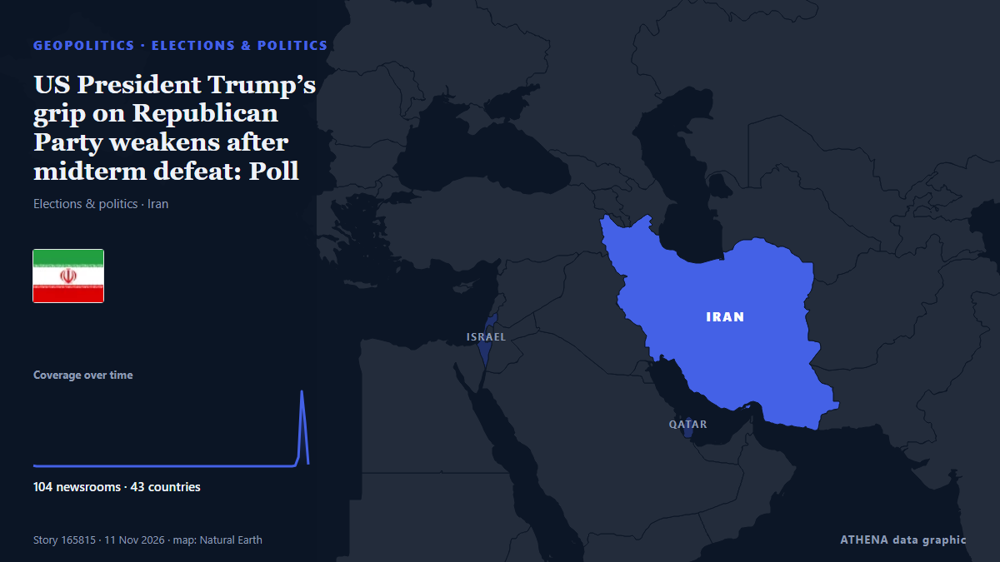

US President Trump’s grip on Republican Party weakens after midterm defeat: Poll

Christians United for Israel called the vice president’s comments a ‘dog whistle’ faulting Jews. from The Jerusalem Post
Reported independently by 104 outlets in 44 countries since 27 May, first by CBC News (alternative feed); coverage is fading. ATHENA rates the risk high (6.8/10), driven mainly by the severity of the harm described and its geographic and sector reach. Confidence is 90% (high), with 104 independent outlets corroborating it and an average source reliability of 74%. Outlets by country: United States (10), Israel (3), South Africa (3). Coverage: 27 May to 8 Nov, 3961 hours.
Why it matters: Security and diplomatic developments can shift alliances, trade and markets well beyond the countries directly involved.
What changed: 11 new reports from 11 outlets in the 24 hours to 12 Nov.
First reported as: Abdul El-Sayed backs Trump’s call to cut Israel aid, says he is willing to work with president
How to read this page
- What you are reading
- 104 outlets in 44 countries reported this event. The reports below are listed in the order they appeared; each headline opens the original article. ATHENA writes none of the reports.
- Our reading
- For the record — The reports describe a completed, domestic, commercial or personal matter. We list it so you can see who reported it and when. We are not tracking a risk of wider conflict here.
- How much evidence
- Limited Treat this page as an early report.
After repeats, off-topic items and stale reports are removed, 12 of the 39 listed reports are counted; 44% of the headlines match the event.
About 42% of the headlines are analysis or opinion rather than straight reporting.
- What this does not mean
- ATHENA measures how an event is reported, not whether it is true. This is not a forecast, a judgement on who is right, or advice.
- What would change it
- Reports from other independent outlets showing a different development, or a firm confirmation or denial from an official source.
Reading R2 · refreshed with every update of this page. ATHENA has not yet published a track record for these readings; when it does, it will be linked here.
At a glance
Selected, scored and written by ATHENA's published methodology. No editor intervenes in individual events. How this is produced ›
| 27 May 16:12 UTC | 1 |
|---|---|
| 29 May 16:12 UTC | 0 |
| 31 May 16:12 UTC | 0 |
| 02 Jun 16:12 UTC | 0 |
| 04 Jun 16:12 UTC | 0 |
| 06 Jun 16:12 UTC | 0 |
| 08 Jun 16:12 UTC | 0 |
| 10 Jun 16:12 UTC | 0 |
| 12 Jun 16:12 UTC | 0 |
| 14 Jun 16:12 UTC | 0 |
| 16 Jun 16:12 UTC | 0 |
| 18 Jun 16:12 UTC | 0 |
| 20 Jun 16:12 UTC | 0 |
| 22 Jun 16:12 UTC | 0 |
| 24 Jun 16:12 UTC | 0 |
| 26 Jun 16:12 UTC | 0 |
| 28 Jun 16:12 UTC | 0 |
| 30 Jun 16:12 UTC | 0 |
| 02 Jul 16:12 UTC | 0 |
| 04 Jul 16:12 UTC | 0 |
| 06 Jul 16:12 UTC | 0 |
| 08 Jul 16:12 UTC | 0 |
| 10 Jul 16:12 UTC | 0 |
| 12 Jul 16:12 UTC | 0 |
| 14 Jul 16:12 UTC | 0 |
| 16 Jul 16:12 UTC | 0 |
| 18 Jul 16:12 UTC | 0 |
| 20 Jul 16:12 UTC | 0 |
| 22 Jul 16:12 UTC | 0 |
| 24 Jul 16:12 UTC | 0 |
| 26 Jul 16:12 UTC | 0 |
| 28 Jul 16:12 UTC | 0 |
| 30 Jul 16:12 UTC | 0 |
| 01 Aug 16:12 UTC | 0 |
| 03 Aug 16:12 UTC | 0 |
| 05 Aug 16:12 UTC | 0 |
| 07 Aug 16:12 UTC | 0 |
| 09 Aug 16:12 UTC | 0 |
| 11 Aug 16:12 UTC | 0 |
| 13 Aug 16:12 UTC | 0 |
| 15 Aug 16:12 UTC | 0 |
| 17 Aug 16:12 UTC | 0 |
| 19 Aug 16:12 UTC | 0 |
| 21 Aug 16:12 UTC | 0 |
| 23 Aug 16:12 UTC | 0 |
| 25 Aug 16:12 UTC | 0 |
| 27 Aug 16:12 UTC | 0 |
| 29 Aug 16:12 UTC | 0 |
| 31 Aug 16:12 UTC | 0 |
| 02 Sep 16:12 UTC | 0 |
| 04 Sep 16:12 UTC | 0 |
| 06 Sep 16:12 UTC | 0 |
| 08 Sep 16:12 UTC | 0 |
| 10 Sep 16:12 UTC | 0 |
| 12 Sep 16:12 UTC | 0 |
| 14 Sep 16:12 UTC | 0 |
| 16 Sep 16:12 UTC | 0 |
| 18 Sep 16:12 UTC | 0 |
| 20 Sep 16:12 UTC | 0 |
| 22 Sep 16:12 UTC | 0 |
| 24 Sep 16:12 UTC | 0 |
| 26 Sep 16:12 UTC | 0 |
| 28 Sep 16:12 UTC | 0 |
| 30 Sep 16:12 UTC | 0 |
| 02 Oct 16:12 UTC | 0 |
| 04 Oct 16:12 UTC | 0 |
| 06 Oct 16:12 UTC | 0 |
| 08 Oct 16:12 UTC | 0 |
| 10 Oct 16:12 UTC | 0 |
| 12 Oct 16:12 UTC | 0 |
| 14 Oct 16:12 UTC | 0 |
| 16 Oct 16:12 UTC | 0 |
| 18 Oct 16:12 UTC | 0 |
| 20 Oct 16:12 UTC | 0 |
| 22 Oct 16:12 UTC | 0 |
| 24 Oct 16:12 UTC | 0 |
| 26 Oct 16:12 UTC | 0 |
| 28 Oct 16:12 UTC | 0 |
| 30 Oct 16:12 UTC | 0 |
| 01 Nov 16:12 UTC | 0 |
| 03 Nov 16:12 UTC | 0 |
| 05 Nov 16:12 UTC | 16 |
| 07 Nov 16:12 UTC | 130 |
| 09 Nov 16:12 UTC | 75 |
| 11 Nov 16:12 UTC | 8 |
| 09 Nov 04:24 UTC | 6.3 |
|---|---|
| 09 Nov 14:30 UTC | 7.0 |
| 09 Nov 16:26 UTC | 7.7 |
| 09 Nov 16:32 UTC | 7.0 |
| 09 Nov 16:40 UTC | 7.7 |
| 09 Nov 16:50 UTC | 7.0 |
| 09 Nov 17:00 UTC | 7.7 |
| 09 Nov 19:42 UTC | 6.8 |
| 09 Nov 23:39 UTC | 7.4 |
| 10 Nov 03:04 UTC | 7.1 |
| 10 Nov 05:09 UTC | 7.5 |
| 10 Nov 05:51 UTC | 7.0 |
| 10 Nov 06:15 UTC | 7.5 |
| 10 Nov 07:49 UTC | 6.9 |
| 11 Nov 18:30 UTC | 6.7 |
| 12 Nov 05:15 UTC | 6.8 |
| 12 Nov 05:15 UTC | 6.8 |
Why these numbers
Importance
Risk
Confidence
The reporting — who reported it, and when
headline as published · opens the original- CBC News (alternative feed) · CanadaWhere Trump goes now on the big 3: tariffs, Iran war, immigration
- The Jerusalem Post · IsraelPro-Israel conservatives blast JD Vance for blaming Israel after GOP midterm losses
- The Scotsman · United KingdomWhat landslide defeat for Donald Trump’s Republicans means for the world – Dr Andrew Gawthorpe
- RTÉ News · IrelandTrump gets ready for a battle on multiple fronts
- Al Jazeera English · QatarQatari PM says US willing to seek solution to war with Iran
- Tehran Times · IranIran announce 12-man squad for AFC Beach Soccer Asian Cup
- The Hill · United StatesTrump sends 'clear message' to Democrats with Miller promotion
- The Straits Times · SingaporeWith an eye on 2028, Vance seeks to inherit Trump’s base and shed his baggage
- IOL · South AfricaGreytown man cries, blames election defeat for drunk driving when arrested by RTI
- Tehran Times · IranIran U17 team arrive in Laos for AFC U17 Asian Cup qualifiers
- Pew Research · United States📊 How did the midterm polls perform?
- Kyiv Post · UkraineUS Midterms: What Is the Global Impact?
- Egypt Independent · Egypt‘Like a bolt from the blue’: Israel’s president shocked by Trump announcing end of aid
- People Daily · KenyaDemocrats face major test to reverse Trump’s foreign aid cuts as Africa counts the cost
- The New Arab · INTStephen Miller: What Trump's new chief of staff means for MENA
- IOL · South Africa‘My party lost the elections’: KZN motorist breaks down after drunk driving arrest
- Middle East Eye · INTUS midterms: Not even Trump's Israel aid stunt could rescue the Republicans
- Politico · United StatesWhy this GOP governor thinks his party got ‘worse than a butt whipping’ on Tuesday
- The Hill · United StatesThe ascendency of JD Vance
- The Hill · United StatesPresident Trump: Forget the midterms and finish the job in Iran
- Anadolu Agency (English) · TurkeyIran warns US of 'devastating response' if Washington starts war
- The Hill · United StatesRebuilding US foreign policy after Trump
- The Straits Times · SingaporeNew Democratic heroes and Republican stalwarts gear up to succeed Trump in 2028 race
- The Jerusalem Post · IsraelPresident Trump: History will remember Iran, not the US midterms - opinion
- Middle East Eye · INT'You lost war and election': Iran's Rezaei warns US of 'devastating response'
- ThisDay (Nigeria) · NigeriaLessons from US Midterm Elections for Nigeria in 2027
- Indian Express · India‘You lost the war and the election’: Iran hardliners press Trump for more
- The Business Standard (Bangladesh) (working feed) · BangladeshTrump’s dilemma regarding Iran: More war, or a settlement?
- Rolling Stone · United States‘SNL’ Weekend Update Drags Trump Over Midterm Drubbing, Stephen Miller Promotion
- Al Jazeera English · QatarIs unconditional support for Israel becoming a liability for Republicans?
- IOL · South AfricaMotorist cites party’s election defeat after drunk-driving arrest in KZN
- The Jerusalem Post · Israel‘No good options’: Iran war caught between Trump's midterm troubles, Israel's election shake-up
- Fortune · United StatesRepublicans saw Indian Americans as ‘natural conservative voters.’ But Trump’s second term undid the gains as their support for Democrats shot up
- Gulf News · United Arab EmiratesIran hardliners smell victory after Trump’s midterm defeat: Is Tehran raising the price of peace?
- Middle East Eye · INT‘Spiritual darkness’: US ambassador to Israel says critics of Iran war are blinded by Satan
- Middle East Eye · INT‘Spiritual darkness’: US ambassador to Israel says critics of Iran war are blinded by Satan
- TASS (English) · RussiaTrump says midterm elections have sent US back into past
- Forbes Business · United StatesHow Trump And Netanyahu’s Alliance Became A Political Liability For Both
- The Hill · United StatesDemocrats plot to choke off Iran war — with some GOP help